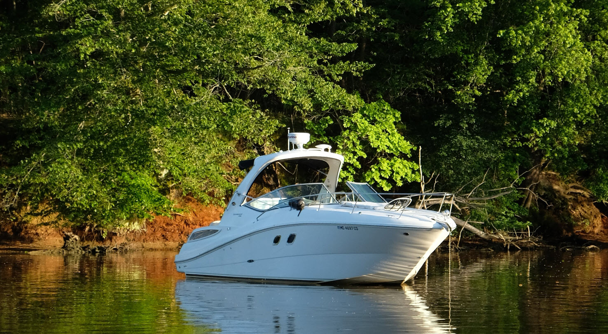
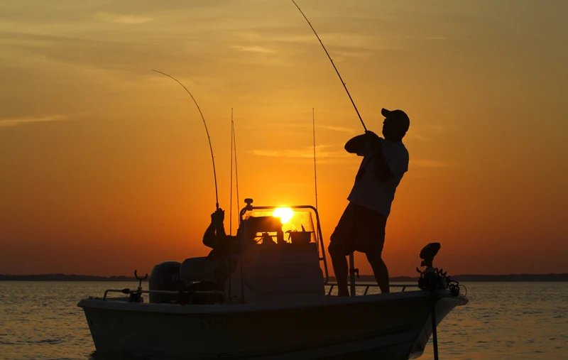
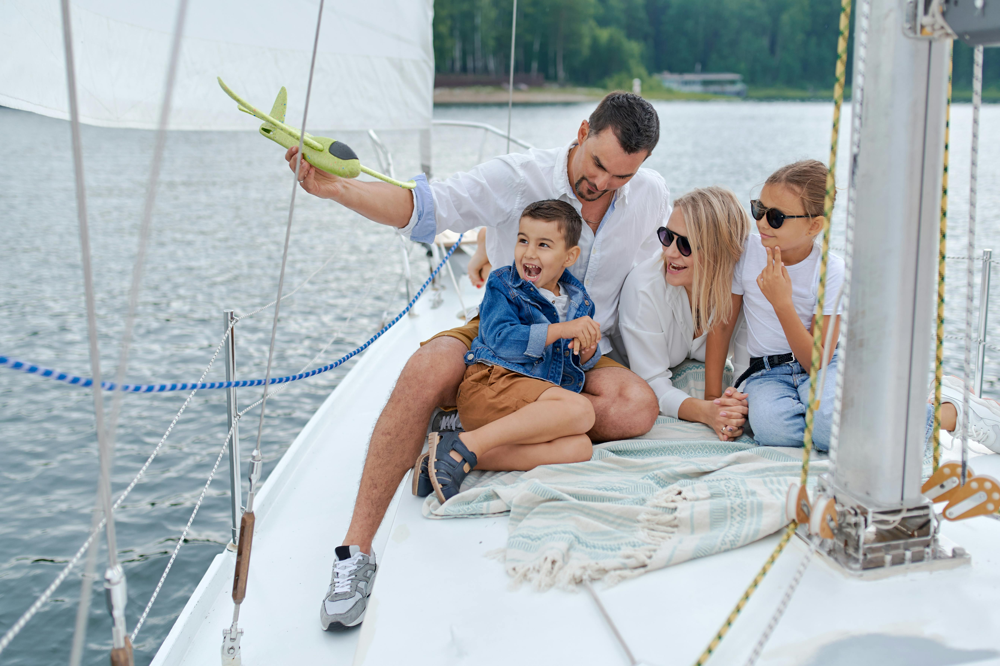
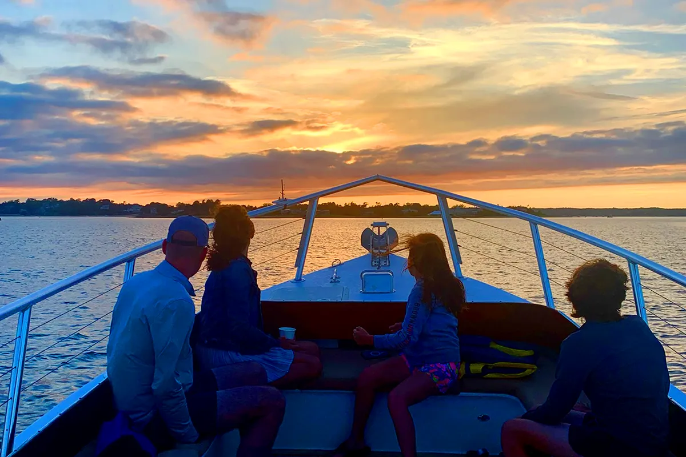
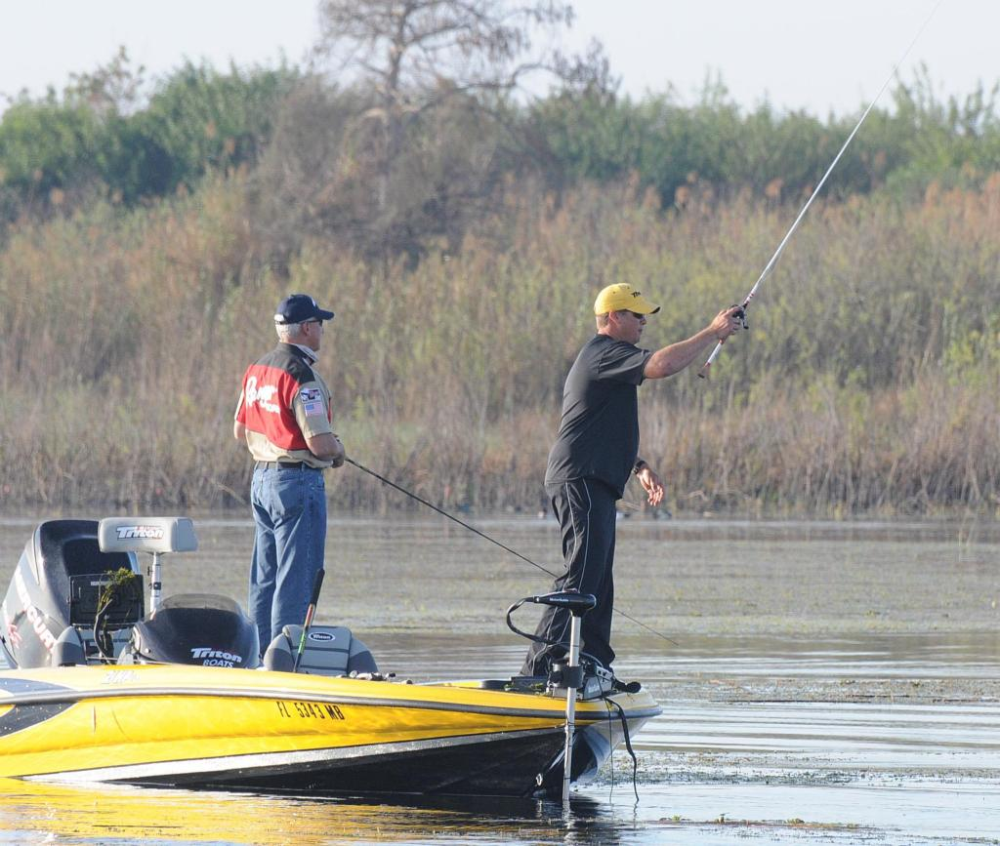
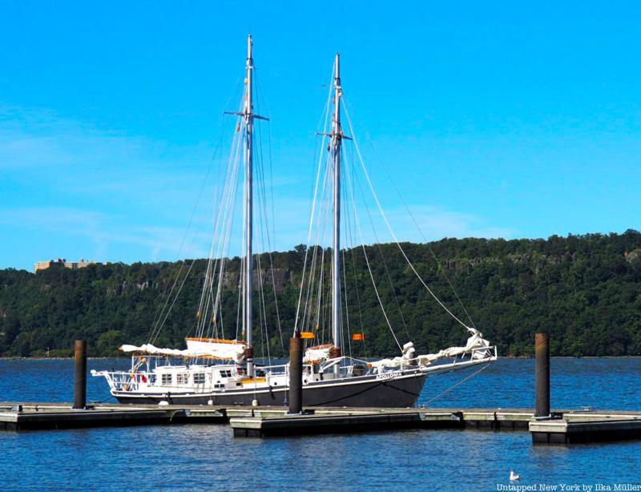

The Beauty of Boating
The beauty of boating lies in its quiet blend of freedom and serenity, where the open water stretches endlessly and time seems to slow with each gentle ripple. Whether gliding across a glassy lake at sunrise or cutting through ocean waves under a bright afternoon sky, boating offers a unique escape from the noise of everyday life. The rhythmic sound of water against the hull, the feel of fresh air, and the ever-changing horizon create a calming, almost meditative experience. It’s a space where adventure and peace coexist—where one moment can bring thrilling speed and the next, stillness and reflection—making every journey on the water feel both personal and timeless.


Boats Have So Many Purposes!
Boats serve a wide range of purposes, making them incredibly versatile tools on the water. They can be used for transportation, whether it’s commuting across a harbor, traveling between islands, or carrying goods over long distances. Many people use boats for recreation, such as fishing, water skiing, or simply cruising to relax and enjoy the scenery. They also play important roles in professional settings, supporting activities like commercial fishing, marine research, tourism, and rescue operations. From small personal kayaks to large cargo ships, boats adapt to countless needs, blending practicality with enjoyment in ways few other forms of transportation can match.
Why Choose Us?
Choosing Lucci’s Boating means opting for a company that prioritizes both experience and reliability on the water. With a strong focus on customer satisfaction, Lucci’s Boating offers well-maintained vessels, knowledgeable staff, and flexible options tailored to different needs—whether you’re planning a relaxing day trip, a fishing excursion, or a special event. Unlike larger, impersonal companies, they emphasize a more personalized approach, taking the time to ensure each customer feels comfortable and confident before setting out. Combined with competitive pricing and a reputation for professionalism, Lucci’s Boating stands out as a dependable choice for anyone looking to make the most of their time on the water.

Upcoming Events
-
Sunset Harbor Cruise Night
A relaxed evening ride with music, snacks, and scenic views as the sun sets over the water.

Date: May 2nd, 2026 at 6:00 PM - 9:00 PM
-
Beginner’s Fishing Tournament
A friendly, low-pressure competition designed for newcomers, with guidance, prizes, and a fun social atmosphere.

Date: May 9th, 2026 - time TBD
-
Riverside Town-Hopping Day Trip
A guided excursion where guests visit multiple nearby towns, with time for exploring and picnicking.

Date: May 16th, 2026 at 9:00 AM - 5:00 PM
To RSVP for events Call (518) 555-7429 or Email EVENTS@LUCCISBOATING.COM